Презентация
Глушенок А. А.
Российский университет дружбы народов, Москва, Россия
27 ноября 2026
Приобретение навыков настройки сервера NFS для удалённого доступа к ресурсам.
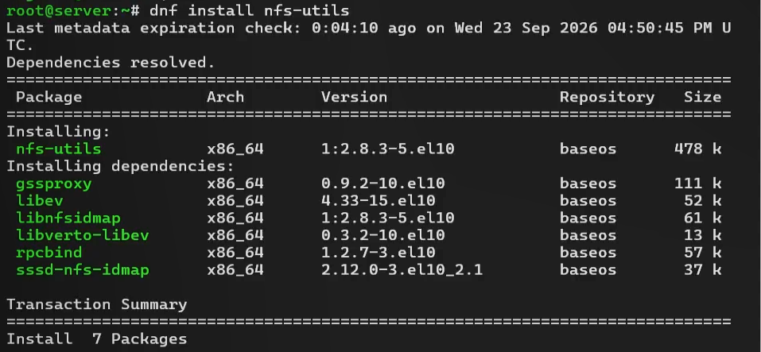
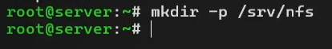
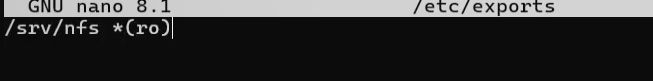
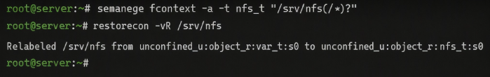
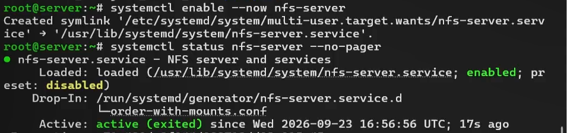
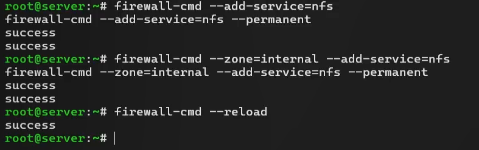
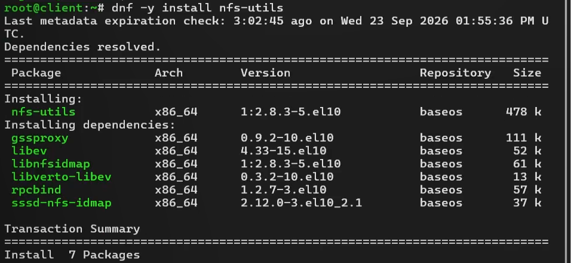
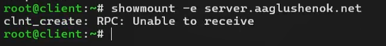
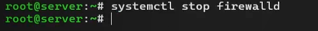
Затем на клиенте вновь пробуем подключиться к удаленно смонтированному ресурсу (сервер ответил, что экспортирует директорию /srv/nfs абсолютно для всех клиентов).
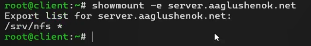
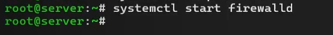
TCP:
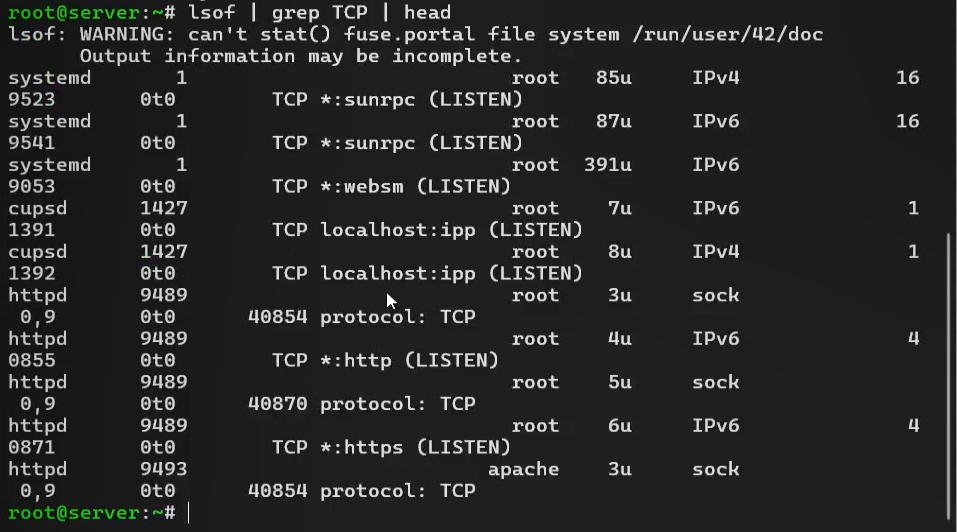
UDP:
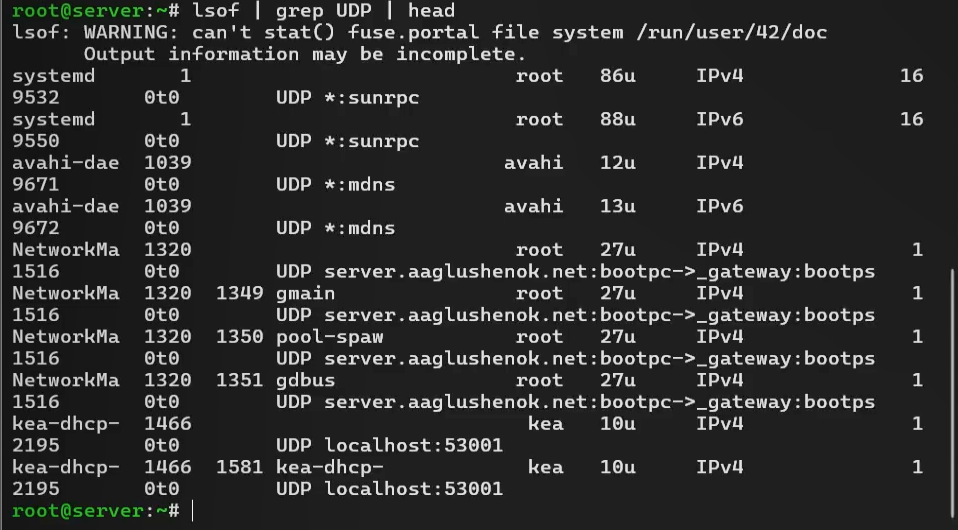
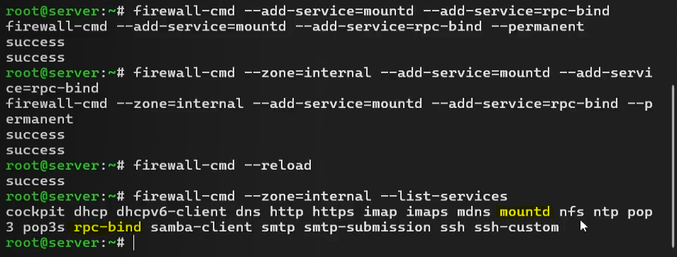
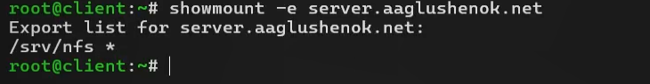
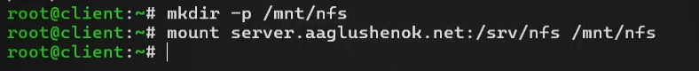
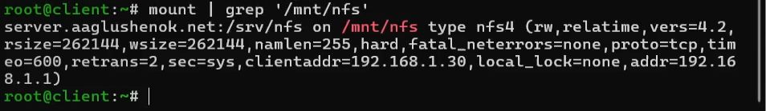
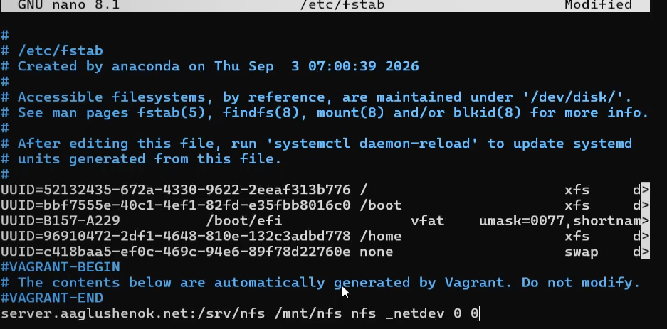
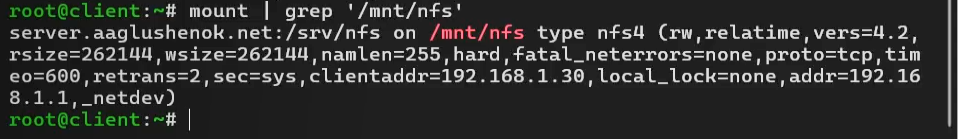
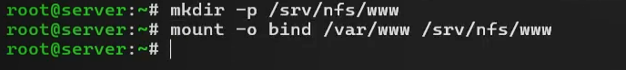
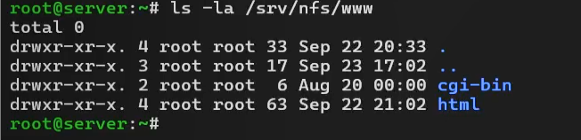
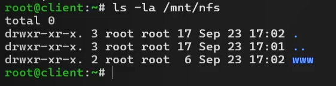
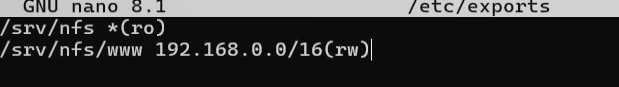
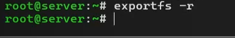
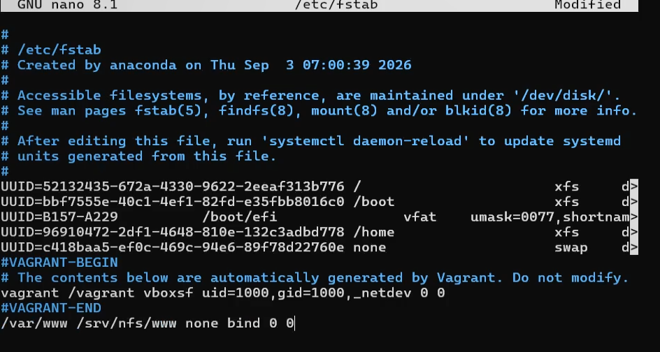
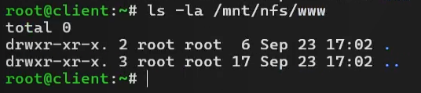
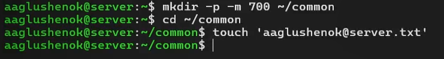
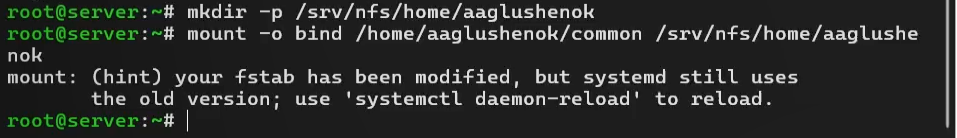
проверка прав доступа: владелец каталога имеет права на чтение, запись и выполнение, группа и остальные пользователи не имеют никаких прав на этот каталог.
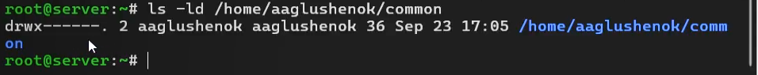
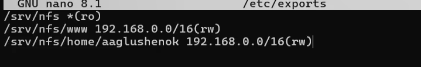
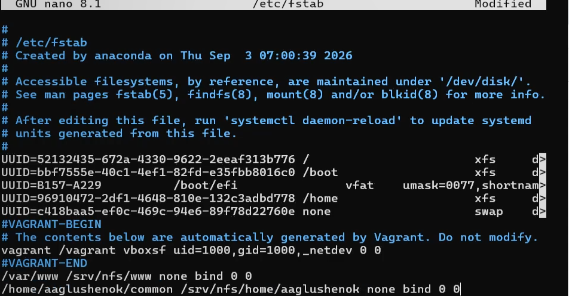
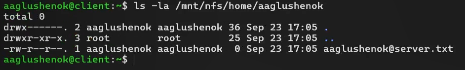
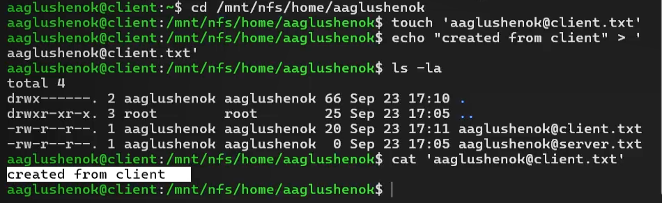
Далее пробуем проделать это под пользователем root (НЕ успешно, ограничено правами доступа).
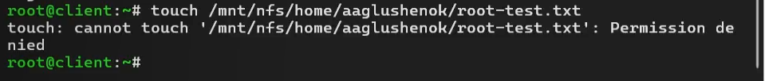
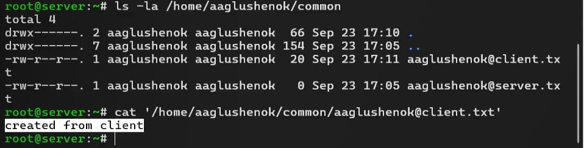
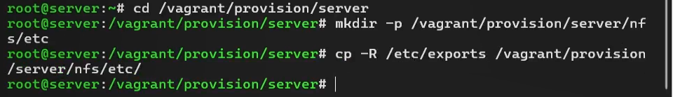
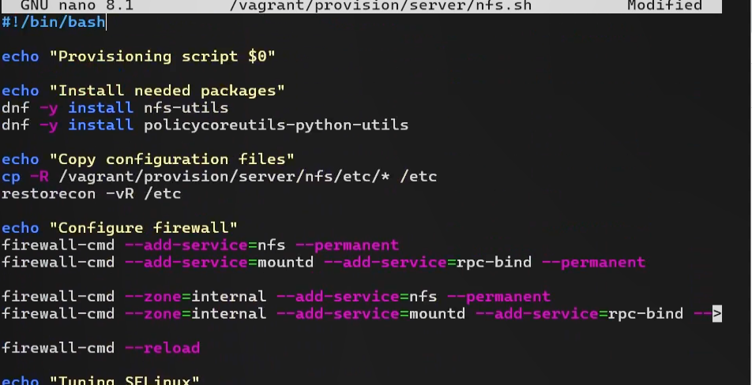
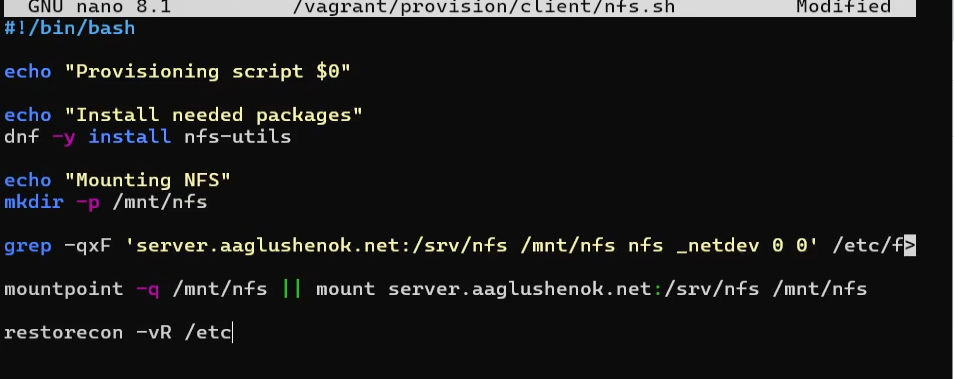
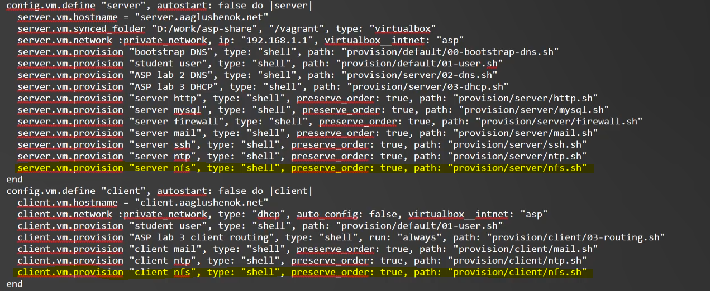
В ходе выполнения лабораторной работы № 13 мне удалось приобрести навыки настройки сервера NFS для удалённого доступа к ресурсам.
IETF. RFC 8881: Network File System (NFS) Version 4 Minor Version 1 Protocol [Электронный ресурс]. — URL: https://datatracker.ietf.org/doc/html/rfc8881 (дата обращения: 27.11.2026).
IETF. RFC 7530: Network File System (NFS) Version 4 Protocol [Электронный ресурс]. — URL: https://datatracker.ietf.org/doc/html/rfc7530 (дата обращения: 27.11.2026).
Red Hat. Configuring and Using Network File Services [Электронный ресурс]. — URL: https://access.redhat.com/documentation/zh-cn/red_hat_enterprise_linux/9/pdf/configuring_and_using_network_file_services/red_hat_enterprise_linux-9-configuring_and_using_network_file_services-zh-cn.pdf (дата обращения: 27.11.2026).
Debian Manpages. exports(5) — nfs-kernel-server [Электронный ресурс]. — URL: https://manpages.debian.org/bookworm/nfs-kernel-server/exports.5.en.html (дата обращения: 27.11.2026).
Red Hat. SELinux Users and Administrators Guide: NFS and SELinux [Электронный ресурс]. — URL: https://docs.redhat.com/zh-cn/documentation/red_hat_enterprise_linux/7/pdf/selinux_users_and_administrators_guide/ (дата обращения: 27.11.2026).